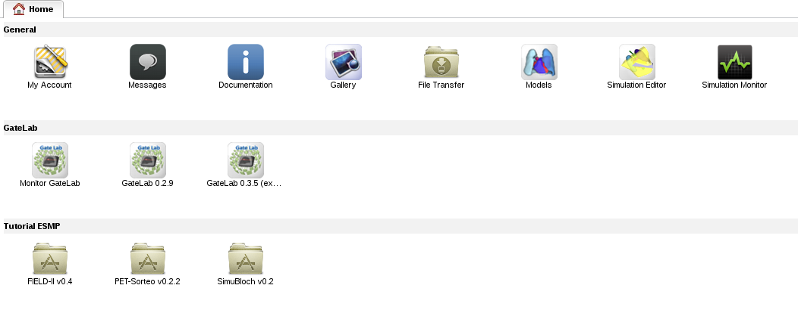
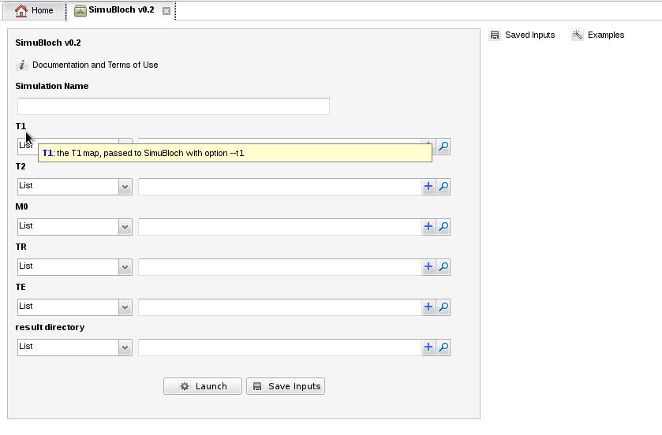
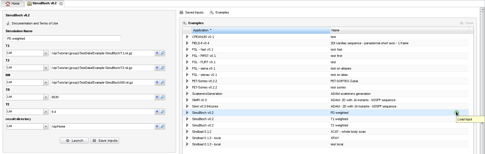
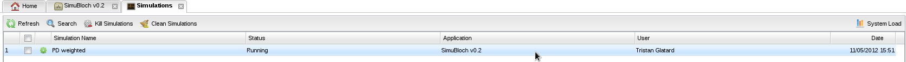
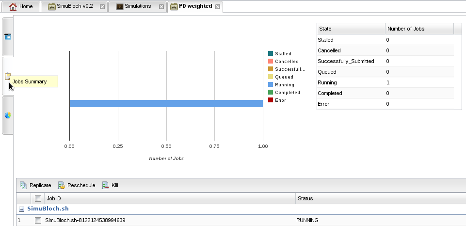
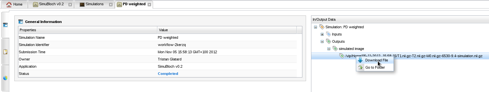
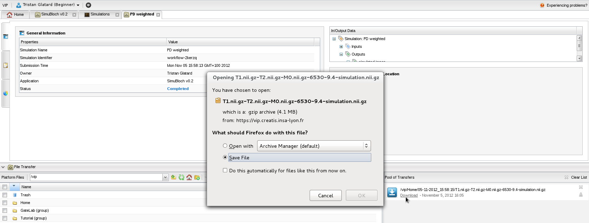
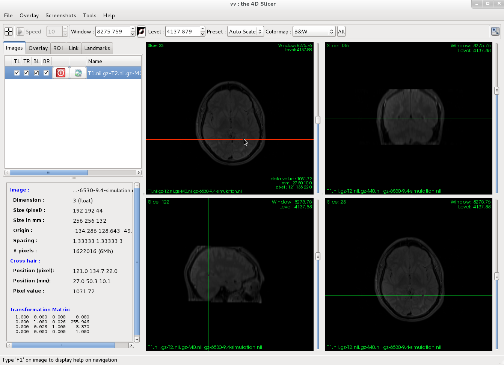

Welcome
- Make sure that you are registered as a tutorial user. Your home page should look like this:

In this exercise we will simulate a spin-echo MR image of the brain using SimuBloch, a code developed by Fang Cao, Olivier Commowick and Christian Barillot at IRISA in Rennes.
- In your home page, open MRI simulator "SimuBloch v0.2"
- Look at the parameters of the simulator: 3 maps defining
the magnetic parameters (T1, T2 and proton density M0) in each
voxel of the brain, two MR sequence parameters (TR and TE), and a directory where the results will be stored.

- In section "Examples" (), load one of the examples available for "SimuBloch v0.2", for instance "PD weighted" (move your mouse over the example and click the green button):

- Then click "launch" and wait until a green message appears to confirm that the simulation was launched.
- Go back to your home page, and open "Simulation Monitor". Your simulation should be in status running:

- The simulation task is created and appears in the "Jobs summary":

- After a few seconds, the simulation is completed, and the result image is available for download in tab "General Information". Download the result file by right-clicking on the output link:

- Results can finally be downloaded on your local machine from the file transfer tool:

- To visualize the result, download and install VV, and open the .nii.gz file that you have just downloaded: